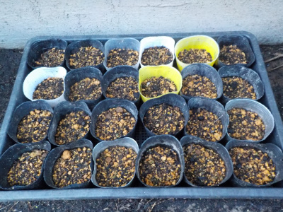
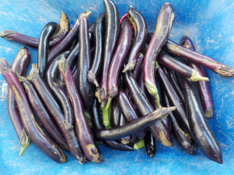
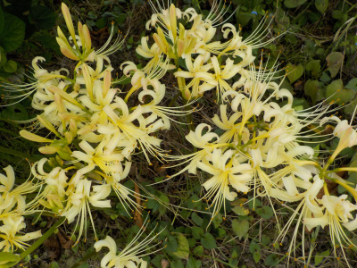
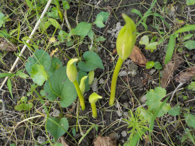
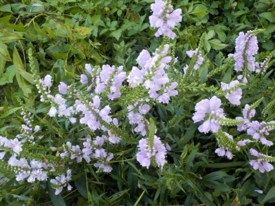

ブロッコリーと花菜の種をまきました。
2023/09/18

ダイソーで2袋110円で買った野菜の種をまきました。
種蒔きはよく失敗しているので、今回も失敗するかもしれないです。
何本か育つといいなくらいに思っています。
2023/09/18

ダイソーで2袋110円で買った野菜の種をまきました。
種蒔きはよく失敗しているので、今回も失敗するかもしれないです。
何本か育つといいなくらいに思っています。
2023/09/18

ナスビを沢山収獲しました。畑にはまだ沢山大きくなったナスビが残っています。
全部食べるのは無理かもしれないですけど、出来るだけ食べようと思っています。
毎日焼きナスかな。
2023/09/18

白い彼岸花が咲きました。なんかいつもより黄色い気がする。
まだツボミがありますので、彼岸まで持ちそうです。
2023/09/12

これから急成長して開花します。
彼岸花なので彼岸に咲くといいかな。
2023/09/03

近ごろあちこちの草を刈っています。
今日は疲れた時に、この花を見て休憩しました。花があるといい気分転換になりますね。
過去の日記
台風の季節です。